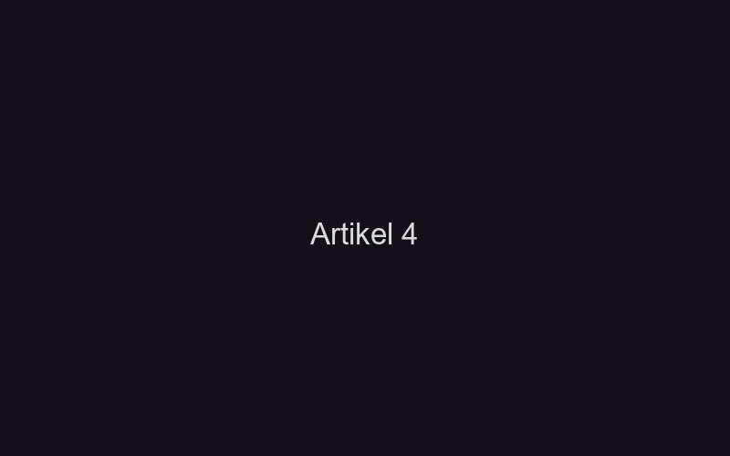

Pendahuluan
Desa Sumberrejo di kawasan Magelang, Jawa Tengah, adalah desa yang hidup dari hasil sawah. Di musim tanam, hamparan hijau padi membentang sejauh mata memandang, dikelilingi pepohonan bambu yang berbisik setiap kali angin bertiup. Desa yang damai — setidaknya di siang hari. Karena ketika malam tiba dan bulan purnama memancarkan cahaya perak di atas permukaan air sawah, desa ini berubah menjadi panggung untuk sesuatu yang tidak bisa dijelaskan oleh logika.
Pak Surya, petani berusia enam puluh dua tahun yang telah menggarap sawah yang sama selama empat puluh tahun, adalah tokoh sentral dalam kisah ini. Ia adalah orang yang tidak percaya pada hal-hal mistis — sampai suatu malam di bulan September 2024, ketika tangisan dari tengah sawahnya membuatnya mengubah pandangan tentang segalanya.
Kehidupan Sebelum Malam Itu
Petani yang Tidak Percaya Takhayul
Pak Surya dikenal di desa sebagai orang keras kepala. Ketika tetangga memperingatkan agar tidak menggarap sawah bagian timur setelah maghrib karena "ada yang tidak suka diganggu," ia hanya tertawa. "Saya garap sawah itu sejak bapak saya masih hidup, tidak pernah ada apa-apa," katanya selalu.
Sawah bagian timur memang memiliki reputasi buruk di desa. Menurut cerita turun-temurun, area itu pernah menjadi tempat pembuangan jenazah korban wabah pes tahun 1918 — masa ketika desa kehilangan hampir sepertiga penduduknya dan penguburan massal dilakukan di tanah yang kini menjadi bagian sawah Pak Surya. Tapi itu cerita dari zaman kakek, dan Pak Surya tidak punya waktu untuk dongeng kakek.
Konflik: Malam Tangisan
Pertama Kali Mendengar
Malam itu, Pak Surya terbangun karena air hujan yang mulai turun deras. Ia perlu memeriksa tanggul sawah bagian timur yang rawan jebol saat hujan lebat. Dengan jas hujan dan senter, ia berjalan menyusuri pematang sawah dalam kegelapan yang hanya dipecah oleh cahaya senter dan kilat samar di kejauhan.
Saat ia mendekati bagian tengah sawah timur, ia mendengarnya — tangisan. Bukan tangisan manusia biasa. Ini adalah tangisan yang dalam, melengking, dan penuh kesedihan yang begitu nyata hingga Pak Surya merasakan dadanya sesak. Seperti tangisan seorang ibu yang kehilangan anak, atau anak yang kehilangan ibu — tangisan yang datang dari tempat paling dalam jiwa.
Ia mengarahkan senter ke arah suara. Di tengah sawah yang tergenang air, berdiri sosok putih setinggi kurang lebih satu meter. Berkain kafan basah yang menempel pada bentuk tubuh, dan wajah — jika itu bisa disebut wajah — menangis. Air mata hitam mengalir dari lubang mata yang dalam, bercampur dengan air sawah di bawahnya.
"Saya tidak lari. Saya tidak tahu kenapa, tapi kaki saya tidak mau bergerak. Saya hanya menangis bersama dia. Saya tidak kenal dia, tapi saya merasakan sakitnya seolah sakit saya sendiri." — Pak Surya
Penemuan di Bawah Lumpur
Tangisan itu berlangsung selama yang terasa seperti berjam-jam, padahal mungkin hanya tiga puluh menit. Ketika fajar mulai menyingsing dan suara adzan subuh menggema dari masjid desa, sosok itu perlahan tenggelam ke dalam lumpur sawah — tidak jatuh, tetapi seperti ditarik oleh tanah itu sendiri. Tangisan berhenti. Sawah kembali sunyi.
Pak Surya tidak pulang ke rumah. Ia duduk di pematang sawah hingga matahari terbit, lalu mulai menggali di tempat sosok itu tenggelam — dengan tangannya sendiri, tanpa alat, seperti orang yang dipengaruhi oleh kekuatan di luar dirinya. Pada kedalaman sekitar setengah meter, tangannya menyentuh sesuatu yang keras. Bukan batu. Bukan akar.
Itu adalah tulang. Tulang manusia. Banyak tulang — tengkorak kecil, tulang anak-anak, berserakan dalam lapisan lumpur hitam yang berbau busuk meskipun sudah puluhan tahun terkubur.
Konsekuensi Penemuan
Penggalian Resmi dan Kebenaran Sejarah
Pak Surya melaporkan temuannya ke kepala desa. Berbekal izin dari instansi terkait, tim arkeologi forensik melakukan penggalian selama dua minggu di area sawah timur. Hasilnya mengejutkan seluruh desa: mereka menemukan sisa-sisa jenazah dari sedikitnya dua puluh tiga individu — sebagian besar anak-anak dan lansia, konsisten dengan korban wabah pes tahun 1918 yang tercatat dalam sejarah lokal.
Yang lebih mengejutkan: semua jenazah ditemukan dalam keadaan dibungkus kain kafan, tetapi tanpa peti mati, tanpa doa yang layak, tanpa tanda peringatan apapun. Mereka dibuang seperti sampah di tanah yang kemudian dijadikan sawah oleh generasi berikutnya tanpa pengetahuan penuh tentang apa yang ada di bawahnya.
Akhir Cerita: Pemakaman Ulang dan Ketenangan
Atas rekomendasi tokoh agama dan adat desa, semua jenazah yang ditemukan dimakamkan kembali dengan ritual lengkap di pekuburan umum desa. Prosesi pemakaman dihadiri hampir seluruh warga Sumberrejo — termasuk generasi muda yang sebelumnya menertawakan cerita-cerita mistis tentang sawah timur.
Malam setelah pemakaman terakhir, Pak Surya kembali ke sawahnya. Kali ini tidak ada tangisan. Tidak ada sosok putih. Hanya angin malam yang berhembus lembut di atas permukaan air sawah, dan suara jangkrik yang sudah lama tidak terdengar di area tersebut.
Pak Surya menangis di pematang sawah — bukan karena takut, melainkan karena lega. Ia kemudian mendirikan sebuah jambang kecil di ujung sawah timur sebagai tanda peringatan, dan setiap tahun pada bulan Muharram, warga desa mengadakan tahlilan di sana.
Penampakan pocong menangis tidak pernah dilaporkan lagi sejak saat itu. Tapi warga desa kini memahami bahwa di balik setiap cerita horor, terkadang ada permintaan tolong dari arwah yang tidak pernah mendapat keadilan.
Kesimpulan
Kisah Pak Surya dan tangisan pocong dari tengah sawah adalah pengingat bahwa horor tidak selalu datang dalam bentuk ancaman. Terkadang, ia datang dalam bentuk kesedihan — permintaan untuk diakui, untuk dimakamkan dengan layak, untuk didengar setelah puluhan tahun dibungkam oleh sejarah yang kejam.
Jika Anda mendengar tangisan di malam hari dari tempat yang seharusnya sunyi, mungkin itu bukan sesuatu yang ingin menyakiti Anda. Mungkin itu sesuatu yang ingin Anda dengar — dan bantu. Tapi hati-hati: tidak semua tangisan di malam hari memiliki niat sebaik itu.
Temukan Cerita Horor Pedesaan Lainnya
Jelajahi koleksi cerita horor dari pedesaan Nusantara di Pocong.id.
Baca Cerita LainnyaBaca juga: Legenda Pocong Berlumuran Tanah Merah di Desa Terlarang dan Pocong Penunggu Jembatan Tua.